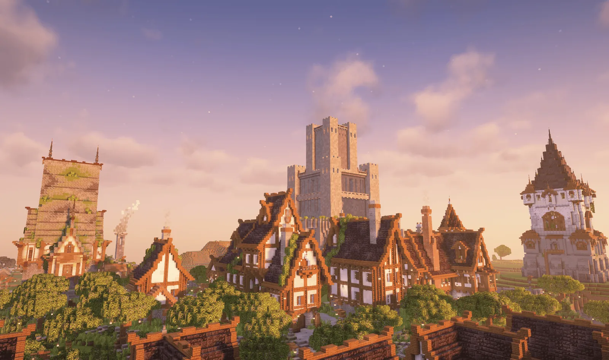
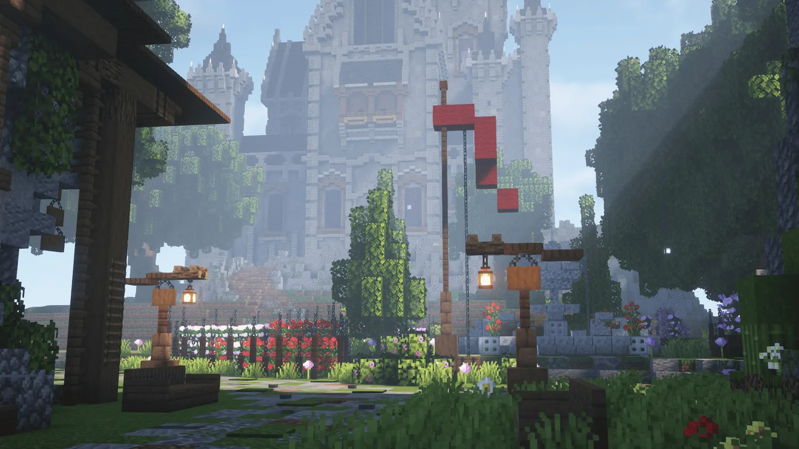

Та самая ванилла
Без /spawn, /kit и лишних упрощений. Рабочие фермы, ванильный спавнрейт и механики, дополняющие игру.
НАСТОЯЩЕЕ ВЫЖИВАНИЕВанильное выживание в уютной атмосфере и среди дружелюбных игроков. Сервер доступен бесплатно и без лицензии. Подходит для версий от 1.21.11 до 26.2.


Astrum — ванильный полу-РП проект, где каждый выбирает своё приключение. Исследуйте мир, стройте уютные дома, развивайте фермы или объединяйтесь с другими игроками в города. Участие в РП необязательно: можно заниматься любимым делом и просто наслаждаться выживанием. Здесь ценят совместные проекты, добрососедство и уважение к чужому труду.
Без /spawn, /kit и лишних упрощений. Рабочие фермы, ванильный спавнрейт и механики, дополняющие игру.
НАСТОЯЩЕЕ ВЫЖИВАНИЕСтрой города, знакомься и участвуй в жизни сообщества. Министры и РП — по желанию, а не по обязанности.
БОЛЬШЕ, ЧЕМ СОСЕДИБез приватов, с правилами против грифа и краж. Здесь ценят твои постройки, время и уважение к другим.
Читать правилаЗайти на сервер максимально просто — вам нужно заполнить небольшую форму и сможете сразу начать играть! Ваша заявка рассмотрится автоматически.
Также мы откроем вам приватный тикет, где вы сможете общаться с командой нашего проекта и задавать различные вопросы по серверу.
Если по какой-то причине мы отклоним вам заявку, то вы можете купить проходку, чтобы в любом случае зайти играть на сервер. Покупая проходку вы помогаете серверу в развитии!
Наш сервер живёт сезонами. Каждый сезон длится около одного года, чтобы у игроков было достаточно времени развивать города, строить масштабные проекты и создавать историю мира. Сейчас идёт Сезон 9.
Карты старых сезонов сохраняются — доступ к ним есть у подписчиков PLUS.